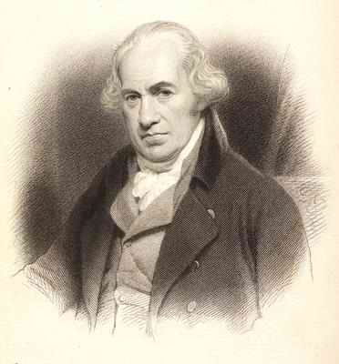

25 JAMES WATT 1736-1819
James
Watt, orang Skotlandia yang sering dihubungkan dengan penemu
mesin uap, adalah tokoh kunci Revolusi Industri.
Sebenarnya, Watt bukanlah orang pertama yang membikin
mesin uap. Rancangan serupa disusun pula oleh Hero dari
Iskandariah pada awal tahun Masehi. Di tahun 1686 Thomas
Savery membikin paten sebuah mesin uap yang digunakan untuk
memompa air, dan di tahun 1712, seorang Inggris Thomas
Newcomen, membikin pula paten barang serupa dengan versi
yang lebih sempurna, namun mesin ciptaan Newcomen masih
bermutu rendah dan kurang efisien, hanya bisa digunakan
untuk pompa air dari tambang batubara.
Watt menjadi tertarik dengan ihwal mesin uap di tahun
1764 tatkala dia sedang membetulkan mesin ciptaan Newcomen.
Meskipun Watt cuma peroleh pendidikan setahun sebagai tukang
pembuat perkakas, tetapi dia punya bakat pencipta yang
besar. Penyempurnaan-penyempurnaan yang dilakukannya
terhadap mesin bikinan Newcomen begitu penting, sehingga
layaklah menganggap sesungguhnya Wattlah pencipta pertama
mesin uap yang praktis.
Keberhasilan Watt pertama yang dipatenkannya di tahun
1769 adalah penambahan ruang terpisah yang diperkokoh. Dia
juga membikin isolasi pemisah untuk mencegah menghilangnya
panas pada silinder uap, dan di tahun 1782 dia menemukan
mesin ganda. Dengan beberapa perbaikan kecil, pembaruan ini
menghasilan peningkatan efisiensi mesin uap dengan empat
kali lipat atau lebih. Dalam praktek, peningkatan efisiensi
ini memang merupakan hasil dari suatu kecerdasan namun
tidaklah begitu merupakan peralatan yang bermanfaat dan
bukan pula punya kegunaan luar biasa ditilik dari sudut
industri.
Watt juga menemukan (di tahun 1781) seperangkat gerigi
untuk mengubah gerak balik mesin sehingga menjadi gerak
berputar. Alat ini meningkatkan secara besar-besaran
penggunaan mesin uap. Watt juga berhasil menciptakan
pengontrol gaya gerak melingkar otomatis (tahun 1788), yang
menyebabkan kecepatan mesin dapat secara otomatis diawasi.
Juga menciptakan alat pengukur bertekanan (tahun 1790), alat
penghitung kecepatan, alat petunjuk dan alat pengontrol uap
sebagai tambahan perbaikan lain-lain peralatan.
Watt sendiri tidak punya bakat bisnis. Tetapi, di tahun
1775 dia melakukan persekutuan dengan Matthew Boulton,
seorang insinyur, dan seorang pengusaha yang cekatan. Selama
dua puluh lima tahun sesudah itu, perusahaan Watt dan
Boulton memproduksi sejumlah besar mesin uap dan keduanya
menjadi kaya raya.
Mesin uap bekerja ganda penemuan Watt tahun
1769
Memang sulit melebih-lebihkan arti penting mesin uap.
Sebab, memang banyak penemuan-penemuan lain yang memegang
peranan penting mendorong berkembangnya Revolusi Industri.
Misalnya, perkembangan dunia tambang, metalurgi, dan
macam-macam peralatan mesin. Sekoci yang meluncur
bolak-balik dalam mesin tenun (penemuan John Kay tahun
1733), atau alat pintal (penemuan James Hargreaves tahun
1764) semuanya terjadi mendahului kreasi Watt. Sebagian
terbesar dari penemuan-penemuan itu hanyalah merupakan
penyempurnaan yang kurang berarti dan tak satu pun punya
arti vital dalam kaitan dengan bermulanya Revolusi Industri.
Lain halnya dengan penemuan mesin uap yang memainkan peranan
penting dalam Revolusi Industri, yang tampaknya keadaan akan
mengalami bentuk lain. Sebelumnya, meskipun tenaga uap
digunakan untuk kincir angin dan putaran air, sumber pokok
tenaga mesin terletak pada tenaga manusia. Faktor ini amat
membatasi kapasitas produksi industri. Berkat penemuan mesin
uap, keterbatasan ini tersingkirkan. Sejumlah besar energi
kini dapat disalurkan untuk hal-hal yang produktif yang
menanjak dengan teramat derasnya. Embargo minyak tahun 1973
membuat kita sadar betapa sengsaranya jika bahan energi
berkurang dan mampu melumpuhkan industri. Pengalaman ini,
pada tingkat tertentu, mendorong kita membayangkan arti
penting Revolusi Industri berkat penemuan James Watt.
Di samping manfaat tenaga untuk pabrik, mesin uap juga
punya guna besar di bidang-bidang lain. Di tahun 1783,
Marquis de Jouffroy di Abbans berhasil menggunakan mesin uap
untuk penggerak kapal. Di tahun 1804, Richard Trevithick
menciptakan lokomotif uap pertama. Tak satu pun dari
model-model pemula itu berhasil secara komersial. Dalam
tempo beberapa puluh tahun, barulah baik kapal maupun kereta
api menghasilkan revolusi baik di bidang pengangkutan darat
maupun laut.
Revolusi Industri berlangsung hampir berbarengan dengan
Revolusi Amerika maupun Perancis. Meskipun waktu itu
tampaknya sepele, kini tampak jelas betapa Revolusi Industri
itu seakan digariskan mempunyai makna jauh lebih penting
untuk peri kehidupan manusia ketimbang arti penting revolusi
politik. James Watt, oleh sebab itu tergolong salah seorang
yang punya pengaruh penting dalam sejarah.
|